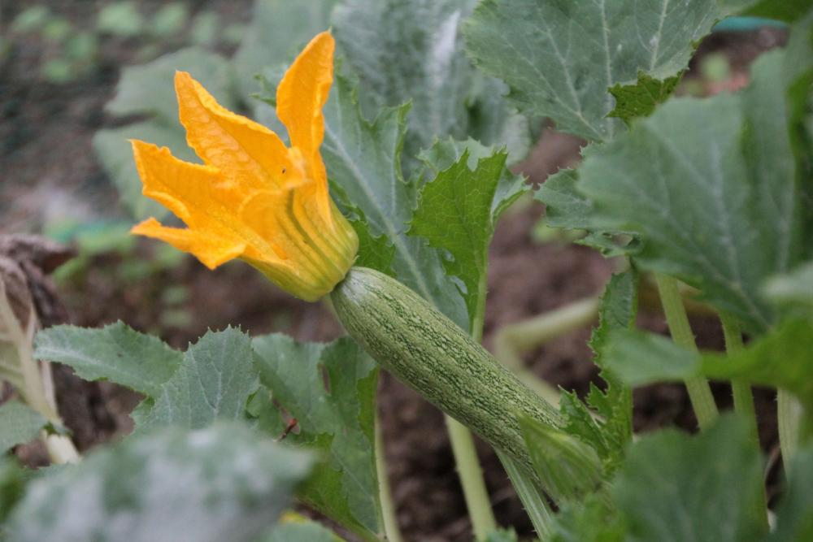

Zucchine

Coltivare il terreno molto ricco di materia organica e non coltivare dopo Solanacee o piante della stessa
famiglia delle cucurbitacee
- Varietà: Zucchina chiara di Faenza
- Periodo di Semina: Marzo / Aprile
- Primo raccolto: Fine Aprile
- Ultimo raccolto: Fine Luglio
- Raccolto: